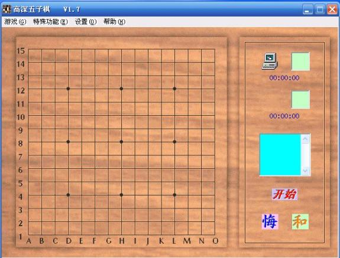

高深五子棋 v1.7 绿色版
首页
五子棋软件
#1 高深五子棋 v1.7 绿色版 作者：启蒙 发表时间：2009-5-15 18:24:38

软件大小：845KB
运行环境：Win9X/Win2000/WinXP/Win2003/
软件语言：简体中文
软件类型：国产软件 - 小软件
软件简介：
高深五子棋是唯一具有学习功能的五子棋对弈软件，能从对局中吸取教训，改变招法。采用15*15的棋盘，没有禁手。
下载地址：
http://zjpjq.qupan.com/3310483.html
［ 岳麓小棋后 于 2009-5-15 22:20:47 时花20金币送鲜花一朵］
#2 Re:高深五子棋 v1.7 绿色版 作者：黄药师 发表时间：2009-5-15 22:18:54
无禁手？？？？？
#3 Re:高深五子棋 v1.7 绿色版 作者：lyx655 发表时间：2009-5-19 7:40:41
能说一下是如何从对局中吸取教训，改变招法的吗？
#4 Re:高深五子棋 v1.7 绿色版 作者：aabb 发表时间：2009-5-31 18:41:18
貌似是仙剑的音乐？？
#5 Re:高深五子棋 v1.7 绿色版 作者：学习有禁手 发表时间：2009-6-1 14:42:12
 水平挺差的,
水平挺差的, 不过蛮音乐好听
不过蛮音乐好听
#6 Re:高深五子棋 v1.7 绿色版 作者：长河落日圆 发表时间：2009-8-28 17:17:43
用一次就不能解压了
#7 Re:高深五子棋 v1.7 绿色版 作者：灰儿 发表时间：2009-12-29 12:08:53
个飞 飞飞飞飞
#8 Re:高深五子棋 v1.7 绿色版 作者：绯色伊依 发表时间：2010-1-5 11:22:01
怎么看起来跟家用五子棋界面一样的？
#9 Re:高深五子棋 v1.7 绿色版 作者：迅 发表时间：2010-1-7 19:12:43
我想找有禁手的啊